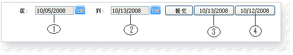

1. 選擇日期範圍
大部分的報告包含以下的控制日期範圍(選擇)

圖 1
- [1] 從日期: 選擇報告的開始日期
- [2] 到日期: 選擇報告的結束日期
- [3] 當前日期: 快捷鍵以查看當前的報告
- [4] 昨日報告: 快捷鍵以查看昨日的報告
要查看報告, 指定所需的日期然後點擊 "提交" 鍵
2. 輸贏,佣金,總投注額,未完成交易
- 正數: 說明贏額或持有人能夠從下線或上線處得到的數額
- 負數: 說明輸額或持有人需支付下線或上線處的數額
- 賠率 = -0.9, 投注額 = 100, 那麼未完成交易 = 90
- 賠率 = 0.9, 投注額= 100, 那麼未完成交易 = 100
3. 導出至excel
若在屏幕上出現Excel圖,標點擊它將導出excel文件格式的報告。
4. 下線/上線
- 下線: 屬於上述賬號的賬戶(等)
- 上線: 上述賬號的母賬號